|
Roda JC - Everton (2-0) 5 aug 2003 |
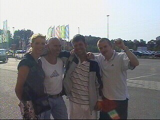
De supporters van Everton waren al behoorlijk
in de olie toen wij arriveerden.
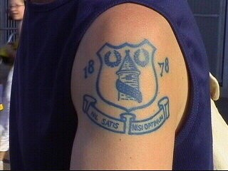
Velen hadden een tattoo van de oudste club uit
Liverpool.
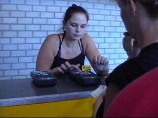
Servicepoint waar je je kaart kunt opladen.
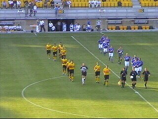
Naast Sonko miste Roda Filipovic in de basis.
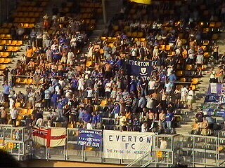
De 3-400 Evertonsupporters die de wedstrijd al
halverwege de tweede helft voor gezien hielden.
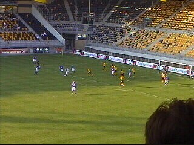
Een vermakelijk moment: Everton probeert een
ingenieuze vrijetrap te nemen maar Cristiano
schiet als een vuurpijl uit onze muur en verovert
de bal.
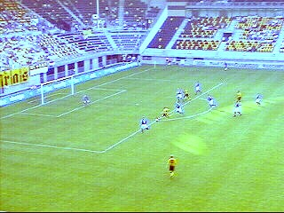
Soetaers haalt uit vanaf 16 meter en scoort 1-0
in de 15e min.
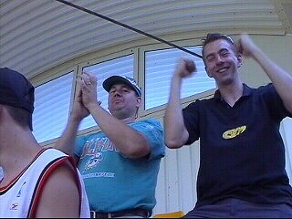
Uitzinnige fans vieren hun feestje.
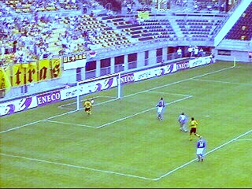
In de 20e min. tikt Cristiano 2-0 binnen.
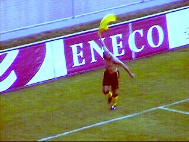
Proud to be a Roda-player! NAC: no way!
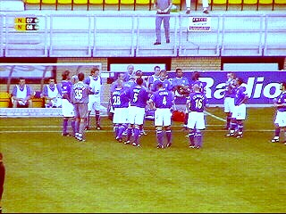
Er werd twee maal een drinkpauze ingelast.
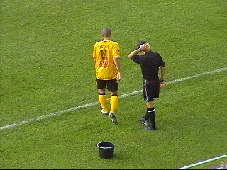
Emmers met sponzen stonden langs het veld om
de tropische temperaturen de baas te kunnen.
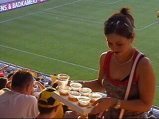
Drinkpauze op de tribune.
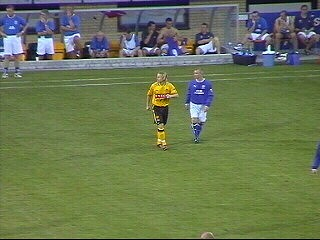
Het eerste optreden van Berglund halverwege de
tweede helft.
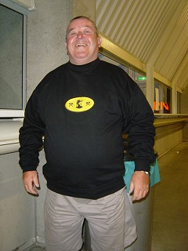
Dit is Jan Habets, vak N10! Voor de
oud-koempel uit Bleijerhei haddenwe
een XXL gereserveerd. Omdat de
KO dichtbleef en de omloop al heel
snel sloot was er niet veel meer na te
babbelen in het stadion.
Roda speelde met name in de eerste helft een
solide partij voetbal waarin het team veel inzet
toonde en als een redelijk goed ge-oliede
machine voetballes gaf aan een tegenvallend
Everton. In de tweede helft was Roda minder
gedreven en kreeg Everton enkele goede
kansen. Maar ook Roda kreeg nog een paar
leuke score-mogelijkheden.